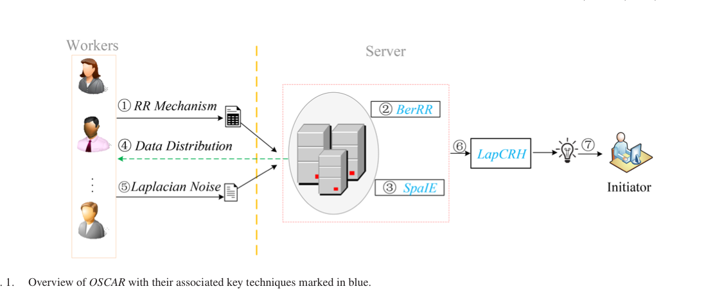

Locally Differentially Private Truth Discovery for Sparse Crowdsensing
IEEE Transactions on Knowledge and Data Engineering (TKDE) 2026

Abstract
—Truth discovery has emerged as an effective tool to mitigate data inconsistency in crowdsensing by prioritizing data from high-quality responders. While local differential privacy (LDP) has emerged as a crucial privacy-preserving paradigm, existing studies under LDP rarely explore a worker’s participation in specific tasks for sparse scenarios, which may also reveal sen- sitive information such as individual preferences and behaviors. Existing LDP mechanisms, when applied to truth discovery in sparse settings, may create undesirable dense distributions, pro- vide insufficient privacy protection, and introduce excessive noise, compromising the efficacy of subsequent non-private truth discov- ery. Additionally, the interplay between noise injection and truth discovery remains insufficiently explored in the current literature. To address these issues, we propose a l Ocally differentially private truth di SCovery approach for sp Arse cRowdsensing, namely OS- CAR. The main idea is to use advanced optimization techniques Received 8 January 2025; revised 16 June 2025; accepted 24 November 2025. Date of publication 1 December 2025; date of current version 30 December 2025. This work was supported in part by Natural Science Research Project of Anhui Educational Committee under Grant 2024AH050364, in part by the Scientific Research Foundation for High-level Talents of Anhui University of Science and Technology under Grant 2023yjrc92, in part by the National Natural Science Foundation of China under Grant 62172216, Grant 62372051, Grant 62272195, Grant 62402431, and Grant 62441618, in part by Zhejiang University Education Foundation Qizhen Scholar Foundation, in part by the Foundation of Y unnan Key Laboratory of Service Computing under Grant YNSC24116, in part by the Key Laboratory of Equipment Data Security and Guarantee Technology, Ministry of Education under Grant 2024020300, in part by the Key Laboratory of Computing Power Network and Information Security, Ministry of Education under Grant 2024PY010, in part by the Guangxi Key Laboratory of Trusted Software under Grant KX202303, in part by JSPS KAKENHI under Grant JP23K24851, in part by JST PRESTO under Grant JPMJPR23P5,.
Resources
Citation
@inproceedings{ZZCCZLZ26,
author = {Pengfei Zhang and Zhikun Zhang and Yang Cao and Xiang Cheng and Youwen Zhu and Zhiquan Liu and Ji Zhang},
title = {{Locally Differentially Private Truth Discovery for Sparse Crowdsensing}},
booktitle = {{Transactions on Knowledge and Data Engineering}},
publisher = {IEEE},
year = {2026},
}